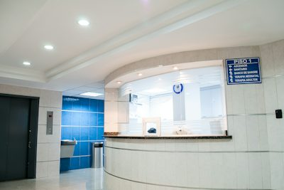
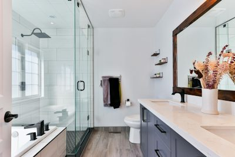
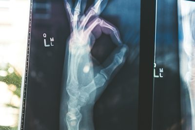
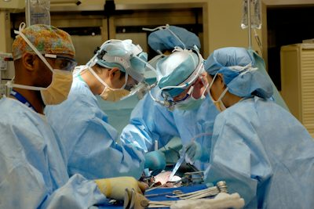
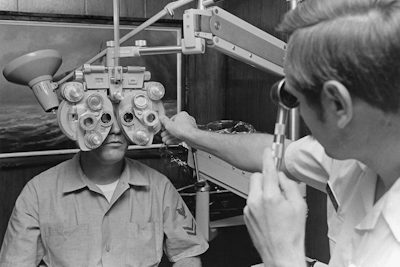
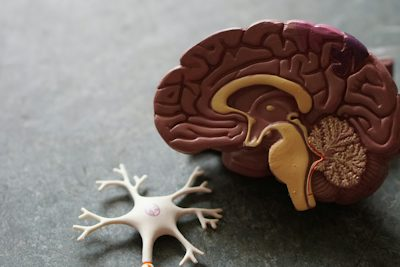

路徑: content\CognitRehab\001_認知復健_認知知覺評估.html
Photo ID: 1576092768241-dec231879fc3
Alt: 居家日常生活茶具使用與泡茶步驟操作情境
圖說: 泡茶等複雜日常生活職能（IADL）需要完整的大腦概念網絡、動作計畫與知覺回饋協同；非本文研究受試者或研究結果。圖片：Unsplash。
路徑: content\CognitRehab\002_認知復健_科技支持認知訓練.html
Photo ID: 1588196749597-9ff075ee6b5b
Alt: 使用數位平板電腦參與認知互動練習情境
圖說: 數位平板與認知訓練軟體提供結構化回饋，但訓練成效仍需評估其能否泛化轉移至真實用藥與日常生活自理；非本文研究受試者或研究結果。圖片：Unsplash。
路徑: content\CognitRehab\004_認知復健_失語症與支持性溝通.html
Photo ID: 1573496359142-b8d87734a5a2
Alt: 專業人員與個案進行面對面支持性溝通與決策諮詢
圖說: 透過面對面支持性技巧、圖卡與輔助溝通工具，失語症個案仍能充分行使醫療決策與自主表達權利；非本文研究受試者或研究結果。圖片：Unsplash。
路徑: content\CognitRehab\006_認知復健_單側空間忽略.html
Photo ID: 1434030216411-0b793f4b4173
Alt: 桌面紙筆劃線與空間注意力專注評估情境
圖說: 單側空間忽略涉及大腦注意力網絡崩解，常透過劃線測驗與紙筆消除作業鑑別其空間探索偏向；非本文研究受試者或研究結果。圖片：Unsplash。
路徑: content\CognitRehab\007_認知復健_中風後心理健康.html
Photo ID: 1516307365426-bea591f05011
Alt: 長者於安靜光線下坐姿沈思與身心休養情境
圖說: 中風後器質性神經疲勞、憂鬱與睡眠障礙具有交織的生理成因，需系統性鑑別並給予心理與神經調節支持；非本文研究受試者或研究結果。圖片：Unsplash。
路徑: content\CognitRehab\009_認知復健_照護者與遠距轉銜.html
Photo ID: 1584515979956-d9f6e5d09982
Alt: 專業照護人員於居家環境指導長者與家庭照護者
圖說: 出院轉銜需串聯家庭照護者實戰準備、社區長照服務與遠距諮詢，無縫接軌生活功能復能；非本文研究受試者或研究結果。圖片：Unsplash。
路徑: content\DigitLearn\001_數位學習_OSSU定位與限制.html
Photo ID: 1517694712202-14dd9538aa97
Alt: 筆記型電腦顯示程式碼與電腦科學自學工作環境
圖說: 電腦科學學習重在建立演算法、資料結構與安全架構思維，而非單純背誦特定程式語法；圖片：Unsplash。
路徑: content\DigitLearn\003_數位學習_系統化程式設計.html
Photo ID: 1555066931-4365d14bab8c
Alt: 軟體工程程式碼檢視與測試自動化畫面
圖說: AI 原型工具需歷經邊界條件測試、例外處理與信效度驗證，具備回滾機制後方能安全走入臨床試用；圖片：Unsplash。
路徑: content\DigitLearn\005_數位學習_資料庫與機器學習基礎.html
Photo ID: 1558494949-ef010cbdcc31
Alt: 現代資料中心伺服器機房與資料存儲基礎設施
圖說: 醫療資料隱私保護取決於清楚掌控傳輸通道、向量儲存與伺服器日誌，落實架構層級的資安隔離；圖片：Unsplash。
路徑: content\DigitLearn\008_AI應用_大型語言模型心智模型.html
Photo ID: 1618005182384-a83a8bd57fbe
Alt: 神經網絡與資訊知識檢索抽象科技概念圖
圖說: 檢索增強生成（RAG）透過外部知識庫比對抑制模型幻覺，但仍需嚴格區分檢索準確度與文獻事實忠實度；圖片：Unsplash。
路徑: content\DigitLearn\009_AI應用_AI產品軟體架構.html
Photo ID: 1485827404703-89b55fcc595e
Alt: 智慧自動化技術與外部工具整合架構概念
圖說: AI Agent 搭配模型上下文協議（MCP）賦予外部工具調用能力，必須落實唯讀、草稿與寫入之權限嚴格分離；圖片：Unsplash。
路徑: content\DigitLearn\017_AI應用_AI系統評測.html
Photo ID: 1551288049-bebda4e38f71
Alt: 數據分析儀表板顯示多項系統指標與效能圖表
圖說: 臨床 AI 系統上線前必須建立高風險錯誤檢測、性能監控儀表板與即時人工切換備援流程；圖片：Unsplash。
路徑: content\MotorRehab\001_動作復健_中風復健照護層級.html
Photo ID: 1519494026892-80bbd2d6fd0d

Alt: 現代醫療復健機構明亮動線與臨床環境
圖說: 中風復健照護層級決定需綜合評估個案功能潛力、家庭支持能耐與出院後無縫社區資源銜接；非本文研究受試者或研究結果。圖片：Unsplash。
路徑: content\MotorRehab\002_動作復健_急性期動員.html
Photo ID: 1584515933487-779824d29309
Alt: 專業人員於醫院病床邊協助病患安全坐姿動員
圖說: 急性期動員關鍵在於醫療生命徵象穩定後的生理負載劑量控制，循序漸進推進床邊坐姿與轉位練習；非本文研究受試者或研究結果。圖片：Unsplash。
路徑: content\MotorRehab\003_動作復健_皮膚與攣縮預防.html
Photo ID: 1576671081837-49000212a370
Alt: 治療人員進行手部與手腕被動關節活動度伸展
圖說: 針對中風後手部痙攣與攣縮，適度被動伸展、抗痙攣副木擺位與受壓皮膚保護需相輔相成；非本文研究受試者或研究結果。圖片：Unsplash。
路徑: content\MotorRehab\005_動作復健_膀胱與腸道功能.html
Photo ID: 1584622650111-993a426fbf0a

Alt: 現代明亮無障礙衛浴與安全扶手設施
圖說: 改善中風後如廁功能需結合定時排尿計畫、骨盆底肌訓練，以及衛浴安全扶手與防滑動線改造；非本文研究受試者或研究結果。圖片：Unsplash。
路徑: content\MotorRehab\006_動作復健_偏癱肩痛與半脫位.html
Photo ID: 1530497610245-94d3c16cda28

Alt: 醫療專業人員進行肩部關節觸診與穩定度評估
圖說: 偏癱肩痛處置首重排除夾擠與旋轉肌袖損傷，搬運時嚴禁拉扯患肢，並透過肩胛托扶支撐維持力學穩定；非本文研究受試者或研究結果。圖片：Unsplash。
路徑: content\MotorRehab\008_動作復健_中風跌倒與骨骼健康.html
Photo ID: 1571019613454-1cb2f99b2d8b
Alt: 專業人員指導進行站立動態平衡與穩定度練習
圖說: 預防中風後跌倒需結合動態重心轉移訓練、雙重任務步態練習與居家環境防絆防滑改造；非本文研究受試者或研究結果。圖片：Unsplash。
路徑: content\MotorRehab\009_動作復健_身體活動與次級預防.html
Photo ID: 1476480862126-209bfaa8edc8
Alt: 個案在良好環境中進行自主步行與有氧體能活動
圖說: 步行訓練強度需聚焦於真實生活目標，透過足夠步速、有氧心肺刺激與任務重複，降低心血管次級風險；非本文研究受試者或研究結果。圖片：Unsplash。
路徑: content\MotorRehab\013_動作復健_上肢與日常活動.html
Photo ID: 1513542789411-b6a5d4f31634
Alt: 進行手部精細動作協調與物體抓握任務練習
圖說: 克服「習得性廢用」需藉由局限誘發（CIMT）與重複性生活任務導向練習，逐步活化患側大腦手部運動皮質；非本文研究受試者或研究結果。圖片：Unsplash。
路徑: content\MotorRehab\014_動作復健_輔具矯具與輪椅.html
Photo ID: 1534528741775-53994a69daeb
Alt: 使用現代輪椅與輔助載具進行自主日常移動
圖說: 行動輔具適配需以「擴展生活半徑」為依歸，綜合考量輪椅人體工學擺位、助行器支撐力與踝足矯具（AFO）功能；非本文研究受試者或研究結果。圖片：Unsplash。
路徑: content\MotorRehab\015_動作復健_吞嚥與營養.html
Photo ID: 1505576399279-565b52d4ac71
Alt: 適合吞嚥障礙者之安全質地調整營養餐食
圖說: 防範隱匿性「無聲吸入」需仰賴系統化吞嚥篩檢、飲食質地標準化（IDDSI）分級與安全進食姿勢指引；非本文研究受試者或研究結果。圖片：Unsplash。
路徑: content\MotorRehab\016_動作復健_工作失能預防與初期處置_ACOEM職業傷病實證指引.html
Photo ID: 1576091160399-112ba8d25d1d
Alt: 醫療專業人員於臨床環境進行肌肉骨骼功能評估與復工諮詢
圖說: 職業傷病與工作失能的初期診療關鍵在於排除紅旗徵兆後，立即建立正向康復預期，透過主動運動處方與職場職能調適，阻斷失能慢性化惡性循環。
路徑: content\MotorRehab\017_動作復健_術後加速康復ERAS全期照護實證指引_打破傳統常規的手術前後與術中關鍵處置.html
Photo ID: 1551076805-e1869033e561
Alt: 現代外科手術室醫療團隊進行術中體溫與血流動力學監測
圖說: 術後加速康復流程（ERAS）強調從術前衛教、術中體溫與體液衡定，到術後早期由口進食與主動下床活動，透過多學科協同減輕手術壓力反應並維持正常生理機能。
路徑: content\VisualRehab\001_視覺復健_視覺復健照護連續體.html
Photo ID: 1622253692010-333f2da6031d
Alt: 眼科醫療專業人員與個案進行視覺照護門診諮詢
圖說: 眼科病理治療與低視能職能復健不應互斥，而應於眼底病程早期建立跨專業無縫連續體照護；非本文研究受試者或研究結果。圖片：Unsplash。
路徑: content\VisualRehab\003_視覺復健_低視能評估與目標.html
Photo ID: 1579684453423-f84349ef60b0

Alt: 專業臨床視覺機能檢測與綜合評估環境
圖說: 低視能評估超越傳統高對比視力表，需同步評估對比敏感度、視野暗點定位與功能性閱讀速度（MNREAD）；非本文研究受試者或研究結果。圖片：Unsplash。
路徑: content\VisualRehab\007_視覺復健_微視野與偏心注視.html
Photo ID: 1508214751196-bcfd4ca60f91
Alt: 人眼瞳孔虹膜與視線注視方向之微距光學特寫
圖說: 黃斑部中心凹受損時，微視野檢查有助於精準定位首選視網膜位點（PRL），訓練偏心注視以繞過中央暗點；非本文研究受試者或研究結果。圖片：Unsplash。
路徑: content\VisualRehab\008_視覺復健_偏心注視與穩視策略實證回顧.html
Photo ID: 1758656321519-02fb5f48dc7e

Alt: 驗光師進行視力與屈光機能檢查的情境照片
圖說: 驗光師與低視能專業人員進行視覺機能評估的情境照片；非本文研究受試者或研究結果。圖片：Unsplash。
路徑: content\VisualRehab\011_視覺復健_照明眩光與濾光.html
Photo ID: 1513506003901-1e6a229e2d15
Alt: 聚焦於工作桌面的溫暖低眩光閱讀照明燈具
圖說: 低視能照度調控首重避免失能性眩光，搭配特定波長有色濾光鏡片與鵝頸閱讀光源，方能大幅提升文字對比；非本文研究受試者或研究結果。圖片：Unsplash。
路徑: content\VisualRehab\013_視覺復健_跌倒與定向行動.html
Photo ID: 1517048676732-d65bc937f952
Alt: 在戶外人行道與城市動線中進行安全定向行動導引
圖說: 定向行動訓練（O&M）透過白手杖技巧、聽覺線索與環境觸覺回饋，協助周邊視野受限者建立安全行走的心智地圖；非本文研究受試者或研究結果。圖片：Unsplash。
路徑: content\VisualRehab\016_視覺復健_心理調適與夏爾博內.html
Photo ID: 1509198397868-475647b2a1e5
Alt: 光學稜鏡光斑折射與視覺知覺光影色彩概念圖
圖說: 夏爾博內症候群（CBS）為大腦視覺皮質去神經化引起的良性生理放電幻象，及早衛教與去病名化能有效化解心理恐慌；非本文研究受試者或研究結果。圖片：Unsplash。
路徑: content\VisualRehab\020_視覺復健_腦傷後視覺復健.html
Photo ID: 1559757175-5700dde675bc

Alt: 大腦皮質神經網絡與高階知覺處理概念影像
圖說: 腦中風後視知覺異常源於皮質背側與腹側資訊整合路徑受損，需透過多重感官代償與環境標記重建辨識機能；非本文研究受試者或研究結果。圖片：Unsplash。
路徑: content\VisualRehab\022_視覺復健_中風後視野缺損.html
Photo ID: 1513694203232-719a280e022f
Alt: 明暗光影分割之空間視覺與廣角探索意象
圖說: 同向偏盲造成單側視野缺失，實證首選代償性掃視訓練（Compensatory Saccades），引導頭部向盲側廣角探索；非本文研究受試者或研究結果。圖片：Unsplash。
路徑: content\VisualRehab\023_視覺復健_四大光學放大原理與眼病變代償.html
Photo ID: 1591076482161-42ce6da69f67
Alt: 光學透鏡驗光與屈光檢查情境照片
圖說: 光學透鏡驗光與屈光檢查示意圖；非本文研究受試者或研究結果。圖片：Unsplash 原始照片。
路徑: content\VisualRehab\024_視覺復健_光學放大輔具處方與使用訓練.html
Photo ID: 1581594693702-fbdc51b2763b
Alt: 使用光學放大鏡檢視文件細節情境照片
圖說: 光學放大鏡與閱讀輔助操作示意圖；非本文研究受試者或研究結果。圖片：Unsplash 原始照片。
路徑: content\VisualRehab\025_視覺復健_電子擴視科技與智慧輔助無障礙.html
Photo ID: 1544717305-2782549b5136
Alt: 平板電腦高對比大字體輔助科技情境照片
圖說: 數位平板高對比顯示與無障礙科技操作示意圖；非本文研究受試者或研究結果。圖片：Unsplash 原始照片。
路徑: content\VisualRehab\026_視覺復健_閱讀與書寫功能重建技巧.html
Photo ID: 1563178406-4cdc2923acbc
Alt: 長輩使用眼鏡與輔具專注閱讀書本情境照片
圖說: 長輩專注閱讀與文字輔助操作示意圖；非本文研究受試者或研究結果。圖片：Unsplash 原始照片。
路徑: content\VisualRehab\027_視覺復健_居家環境改造與日常自理EPIC架構.html
Photo ID: 1455390582262-044cdead277a
Alt: 明亮居家自然採光與整潔廚房空間照片
圖說: 明亮高對比居家環境與安全動線示意圖；非本文研究受試者或研究結果。圖片：Unsplash 原始照片。
路徑: content\VisualRehab\028_視覺復健_糖尿病自我管理與藥物安全指南.html
Photo ID: 1584308666744-24d5c474f2ae
Alt: 慢性病藥盒與醫療血糖管理情境照片
圖說: 慢性病藥物安全分裝與自我管理示意圖；非本文研究受試者或研究結果。圖片：Unsplash 原始照片。
路徑: content\VisualRehab\029_視覺復健_時鐘面定位法評估中心暗點與偏心注視.html
Photo ID: 1516321318423-f06f85e504b3
Alt: 時鐘面定位法評估中心暗點與偏心注視臨床實務
圖說: 時鐘面定位法運用日常生活熟悉的鐘點座標與窺視孔，在 5 分鐘內於床邊精準鑑別中心暗點方位與習慣性偏心注視。圖片：Unsplash 原始照片。